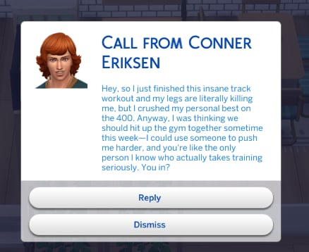
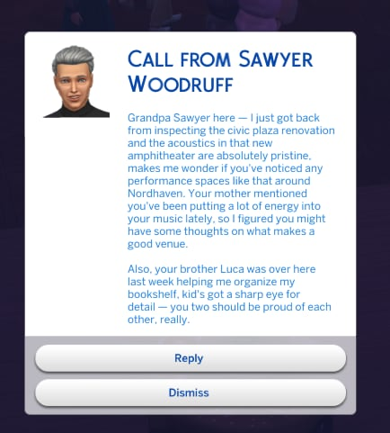
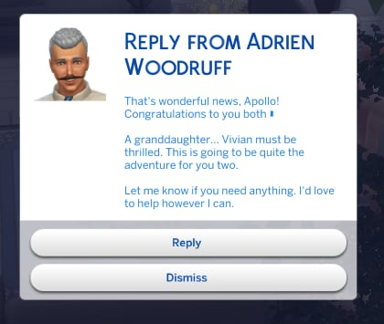
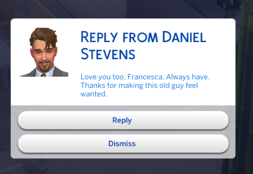
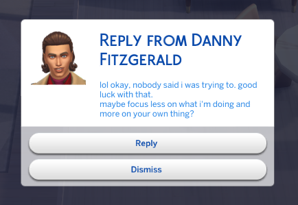
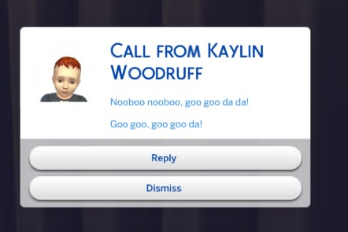

Phone Calls
Random sims call you in character — your kid's friend, your boss, your ex. Each voice shaped by traits, age, mood, and your shared history.
Phone calls, texts, stories, and drama — generated live for your Sims by Claude AI.
Every command reads what's actually happening in your game — who lives in the household, their traits, their relationships, their mood, where they are — and sends it to Claude as context. The AI doesn't make up sims that don't exist or invent jobs they don't have. It writes for the people in front of it.
A flirty teen texts in lowercase with emoji. An elder writes long, warm paragraphs. A grandparent dotes; an enemy sneers. A Goofball cracks jokes mid-call. The voice fits.
Random sims call you in character — your kid's friend, your boss, your ex. Each voice shaped by traits, age, mood, and your shared history.
Quick check-ins, group drama, gossip. Hit Reply on the popup and they keep the conversation going — full back-and-forth, in character.
Soap-opera narration of what's happening in your household, written like a let's-play. Continues from past entries so it builds across sessions.
Surprises that fit your sims' actual lives — promotions, fights, weird neighbours, family secrets. Always actionable; tells you exactly what to do next.
Multi-session 3-act arcs with concrete gameplay goals — raise a skill, hit a career level, complete an aspiration. Pick a theme or let Claude pick one.
Sits quietly in the background and fires content while you play. Set the interval, set the mix (calls, texts, stories, events), forget about it.
Same code, totally different writing — Claude adapts to each sim's age, traits, and how they feel about you. Here are real texts from the same save:






Open the cheat console with Ctrl+Shift+C, type a command, press Enter.
claude.call — incoming callclaude.text — incoming textclaude.sendtext Bella Goth hey!claude.sendcall Bella Goth I have newsclaude.reply <message>claude.story — narrative updateclaude.storyline — 3-act arcclaude.storyline_theme romanceclaude.drama — household dramaclaude.dialogue — in-character linesclaude.event — random eventclaude.goals — session goalsclaude.challenge — gameplay challengeclaude.auto_events onclaude.status — setup & all commandsclaude.chat <message> — freeformclaude.journal — recent historyclaude.reload — after editing configGrab the latest release from the downloads page. You need two files: ClaudeAI.ts4script and claude_config.cfg.
The mod uses Claude (made by Anthropic) to write the dialogue and stories. You need your own API key — it's free to sign up, and you only pay for what you use. A whole evening of play is usually 25–50 cents.
sk-ant-api03-… followed by a long string. You only see it once — if you close the dialog without copying, you'll need to make a new one.
That's it for the Anthropic side — the key is yours. Keep it safe.
Move both downloaded files into:
Documents/Electronic Arts/The Sims 4/Mods/If you have Sims 4 mods already, you've been here before — same folder.
Open claude_config.cfg with any text editor (Notepad, VS Code, TextEdit on Mac). Find this line near the top:
api_key = YOUR_API_KEY_HEREReplace YOUR_API_KEY_HERE with the key you copied. It should look like:
api_key = sk-ant-api03-Xy7…(your full key)…Save the file.
In The Sims 4, open Game Options → Other and tick both:
Restart the game. When the main menu loads, you'll see a notification popup confirming the mod is active.
Inside any household, open the cheat console with Ctrl+Shift+C and type claude.status to see all the commands and confirm everything's wired up.
You pay Anthropic directly for the API calls — there's no subscription to me or anyone else. Rough estimates per command:
| What | Model | Per call |
|---|---|---|
| Calls, texts, events, dialogue, goals | Haiku | ~$0.001 |
| Story, storyline, drama | Opus | ~$0.01–0.02 |
| Freeform chat | Opus | ~$0.005–0.01 |
A long session with 30+ commands plus auto-events usually lands between $0.20 and $0.50.
The mod is free and always will be. If it's making your save more fun, throwing a few dollars on Patreon helps me keep building it — new features, bug fixes, and weirder ideas like AI-generated neighbours and on-the-fly storylines.
Patrons also get early access to new features, occasional polls on what to build next, and a direct line to me for bug reports and requests.
Become a patronPrefer Bitcoin? Scan or copy the address:
351FwouuUN7QRNGy6iDXXFwr7rgt4qDnHx